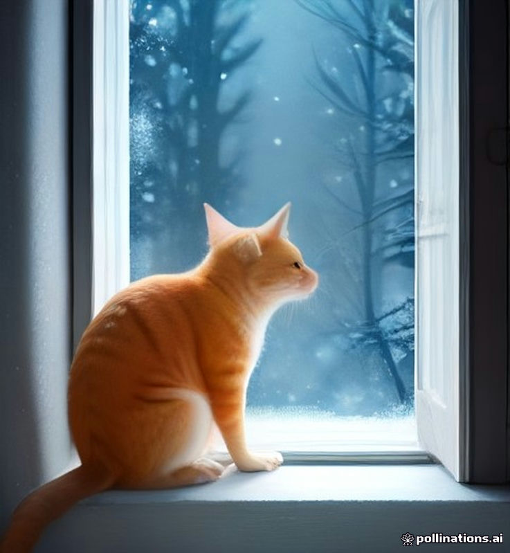
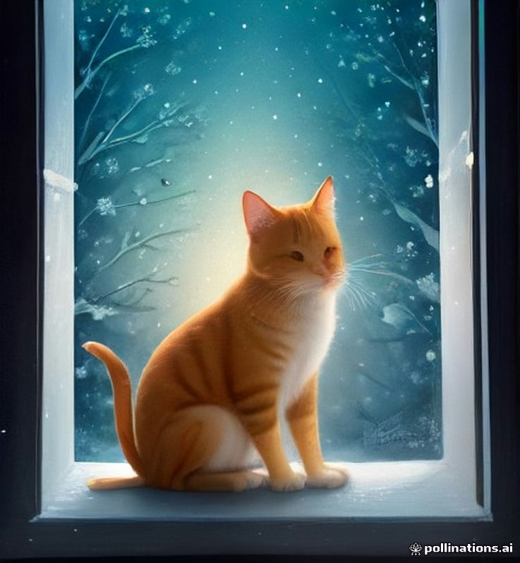
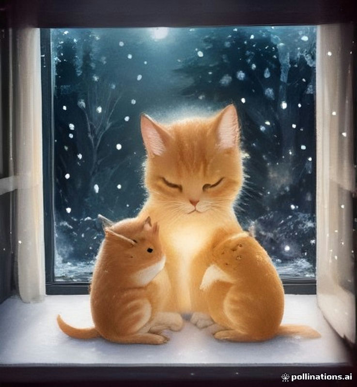
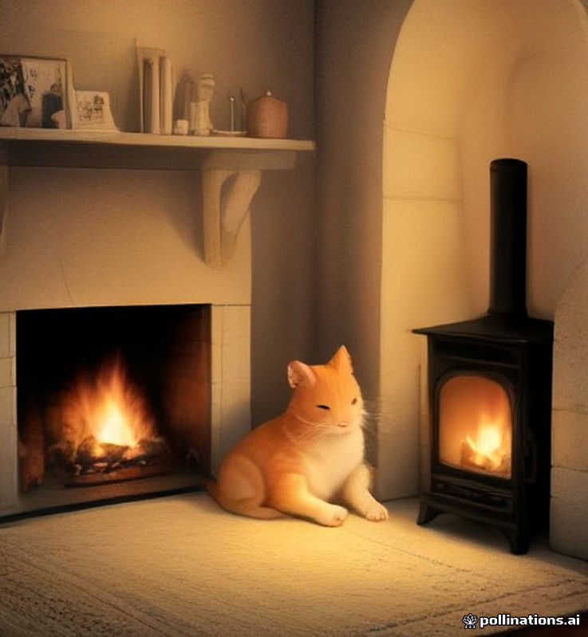

A quiet night of tea and snowflakes reveals a glowing secret in the garden.
The wind hummed a low, chilly tune against our windowpane. Inside, the studio was toasty and smelled like dried chamomile. I sat on my favorite rug, carefully pouring hot water into two mismatched cups. Pip, my tiny grey mouse friend, adjusted his scarf and twitched his nose, eager for the steam to warm his whiskers. Outside, the sky was a deep, velvet indigo, waiting for the very first snowflake to tumble down. We didn't need big adventures tonight; the quiet promise of winter was enough to keep our hearts perfectly full and settled.

Suddenly, a soft tap echoed against the glass. It wasn't a branch or a falling leaf. There, hovering against the cold pane, was a moth with wings like spun moonlight. It didn't belong in the December freeze, yet it glowed with a gentle, amber light that warmed the frost right off the glass. Pip stood on my head, his tiny paws pressed against the window. We watched, breathless, as the little creature danced in the air, casting flickering shadows that looked like tiny, golden lanterns scattered across our cozy wooden floor.

The first snow finally arrived, swirling like white feathers in the moth's golden light. Each flake caught the glow, turning the garden into a glittering stage of stardust. We held our tea tight, watching the moth lead the snow in a slow, rhythmic waltz. It felt as if the entire world had stopped just for us, turning the biting cold into something magical and safe. The moth circled once more, touching the glass with a gentle hum, before drifting upward into the silent, falling clouds of white. We were left in the amber glow.

As the light faded, the room felt warmer than before. Pip curled into a ball behind my ears, his breathing steady and soft. The tea was gone, but a deep, quiet joy remained in the corners of the room. We had shared the secret of the midnight lantern, a spark of summer warmth kept safe in the heart of winter. I moved to the fireplace, poked the logs, and watched the embers glow in the same shade as our visitor. Tomorrow, the town would be buried in drifts, but tonight, we held the light.